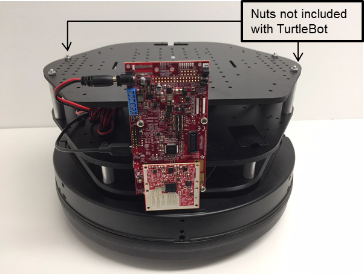
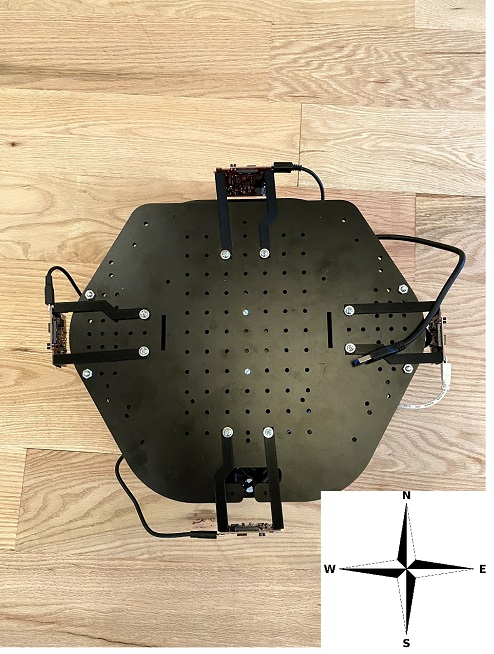

Hardware and Software Setup for Turtlebot and ROS with TI mmWave
===========
# Requirements
### Prerequisite
[[y! Run Out of Box Demo
Before continuing with this lab, users should first run the out of box demo.
This will enable users to gain familiarity with the sensor's capabilities as well as the various tools used across all labs in the mmWave Industrial Toolbox.
]]
### Required and Supported mmWave Evaluation Modules (EVM)
#### ISK EVM
The following ISK modules are compatible. Only one of the following is required for this lab.
Quantity | Item
------------------|-----------------
1 or 4 | Antenna Module Board: [IWR6843ISK](http://www.ti.com/tool/IWR6843ISK)
1 or 4 | Antenna Module Board: [IWR1843BOOST](http://www.ti.com/tool/IWR6843ISK)
1 or 4 | [IWR6843AOPEVM](http://www.ti.com/tool/IWR6843AOPEVM)
[[r! IWR6843 ES2.0 Only
This lab is only compatible with ES2.0 version of IWR6843.
On ISK or ODS, check the device version on your IWR6843 using the on-chip device markings as shown below
1. If line 4 reads `678A`, you have an ES2 device. In this case, this lab is compatible with your EVM.
2. If line 4 reads `60 GHZi`, you have an older ES1 device. In this case, the lab is NOT compatible with your EVM. ES2 IWR6843ISK/IWR6843ISK-ODS boards are orderable from the EVM link above.
<img src="images/iwr6843_silicon_revision.png" width="300"/>
]]
[[r! AoP ES2.0 EVM only
The IWR6843 AoP version of this lab is only compatible with ES2.0 silicon and the corresponding EVM. Please ensure your EVM is the same as in the below image.
<img src="images/iwr6843aopevm1.png" width="300"/>
]]
### Additional Hardware Requirements
Quantity | Item | Details
---------|--------------------------|-----------------
1 | Robot | [TurtleBot2](https://www.turtlebot.com/turtlebot2/) with plate and standoff kit
1 | Local Laptop | Running Linux Ubuntu 18.04. Used for remote operation and visualization
1 | Remote Laptop | Used on Turtlebot2. Running Linux Ubuntu 18.04.
1 | USB 2.0 printer-style cable (A-Male to B-Male) | Used to connect laptop to Turtlebot2
4 | Micro USB Cable | Used to connect laptop to the mmWave EVM (cable comes with the EVM and should be connected to ‘XDS110 USB’ port on EVM)
1 | 12V to 5V DC to DC converter | Must be able to output at least 4 Amps at 5V. Used to allow the EVM to be powered from the Turtlebot2 (this converter is required since the normal 5V output port on the TurtleBot2 cannot supply 2.5Amps)
1 | USB Splitter with Power Adapter | The remote laptop will likely not have 5 USB ports (4 ports for radar and 1 for turtlebot), so a splitter is necessary.
1 | 2-pin miniFit JR connector/cable | Used to go from Turtlebot2 12V output port to the 12V input on the converter (for example, Molex cable part number 245135-0210 or 245135-0220 can be used by cutting it in half so the connector end goes to the TurtleBot2 12V output port and the cut wire end goes to the 12V input of the converter)
| Misc. bolts, nuts, and brackets | For mounting mmWave sensor and DC converter to TurtleBot platform (not included with EVM or TurtleBot)
### Software
Tool | Version | Download Link
----------------------------|---------------------------|--------
TI mmWave SDK | 3.5.x.x | [Link to Latest mmWave SDK](http://software-dl.ti.com/ra-processors/esd/MMWAVE-SDK/latest/index_FDS.html). To access a previous version of the mmWave SDK scroll to the bottom of the table and click the link under "MMWAVE-SDK previous release". Repeat to continue stepping back to previous versions.
mmWave Industrial Toolbox | Latest | Download and install the toolbox. Go to [Using TI Resource Explorer & the mmWave Industrial Toolbox](../../../../docs/readme.html) for instructions.
Uniflash | Latest | Uniflash tool is used for flashing TI mmWave Radar devices. [Download offline tool](http://www.ti.com/tool/UNIFLASH) or use the [Cloud version](https://dev.ti.com/uniflash/#!/)
-----------
### Laptops
Both laptops need to have:
* Linux Ubuntu 18.04 natively installed (Ubuntu 18.04 Virtual Machine running on Windows can be used for remote control laptop if desired)
* ROS Melodic Morenia LTS with specified ROS packages
* TI mmWave ROS Driver supplied with this lab
* Additional ROS packages supplied with this lab
Setup for ROS Labs
===========
This section of the guide will cover how to setup the hardware and software for ROS Labs.
## 1. Flash Evaluation Modules with Out of Box demo
---------------
Before continuing with this lab, users should first run the Out of Box Demo for all four EVMs. Verify with the
[mmWave Demo Visualizer](https://dev.ti.com/mmWaveDemoVisualizer) that the sensor(s) are working as expected.
## 2. Setting up the TurtleBot2
---------------
* The TurtleBot2 is a low-cost, personal robotics platform that is well supported within the ROS
community. There are many existing demos that work out-of-the-box with the TurtleBot2 including
teleoperation (remote control), mapping, and navigation.
* The TurtleBot2 should be assembled and four mmWave EVM mounted as shown in the following pictures to work with this lab. There may be slight variation in mounting depending on EVM revision.
* In the example shown, the brackets to mount the mmWave EVMs were 3D printed.
* It is essential for this demo to mount the mmWave EVMs every 90 degrees around the robot, equidistant from the center of the robot.
* In the example shown, the 12V to 5V converter is mounted underneath the center of the top plate, and the USB splitter is placed under the top plate.
* The Turtlebot and the four EVMs are connected to the laptop using the USB splitter.
1x IWR6843ISK mounted on the front of the Turtlebot2 with an optional MMWAVEICBOOST:

4x IWR6843ISK mounted around the TurtleBot2 – top view (shown without required laptop):

4x IWR6843ISK mounted around the TurtleBot2 – side view (shown without required laptop):
<img src="images/setup/Turtlebot2_quad_iso.jpg" class="img-responsive"/>
## 3. Installing ROS and the TI mmWave ROS Driver
---------------
* Please follow the instructions in the TI mmWave ROS Driver Setup Guide (available on the **TI Resource Explorer under Labs > TI mmWave ROS Driver**) to install ROS and the TI mmWave ROS Driver on each laptop before continuing.
* ROS must be installed on both the TurtleBot laptop and the Remote Control laptop.
* It is a good idea to test out the installation on each laptop by connecting the TI mmWave EVM and trying out the point cloud visualization.
## 4. Installing Dependent Packages
---------------
After installing ROS and the TI mmWave ROS Driver, follow the steps below on both laptops for interchangeability.
Install the Required Dependent ROS Packages
[[r! This demo is only supported with ROS Melodic.
Other versions of ROS are not supported due to limitations with the Turtlebot packages.
]]
1. Install the following ROS packages which are required dependencies to run the demos:
```
$ sudo apt-get install ros-melodic-navigation
```
```
$ sudo apt-get install ros-melodic-hector-slam
```
```
$ sudo apt-get install ros-melodic-octomap-server
```
```
$ sudo apt-get install ros-melodic-octomap-rviz-plugins
```
```
$ sudo apt-get install ros-melodic-vision-opencv
```
```
$ sudo apt-get install ros-melodic-depth-image-proc
```
```
$ sudo apt-get install ros-melodic-joy
```
Installing packages for the turtlebot is different from ROS Kinetic. An official apt package is not available, but the open source community
has put together a script to install TurtleBot packages. Follow these instructions on creating a new catkin workspace, then downloading and building the packages:
```
$ mkdir -p src
$ catkin_make
$ curl -sLf https://raw.githubusercontent.com/gaunthan/Turtlebot2-On-Melodic/master/install_basic.sh | bash
$ catkin_make
```
## 5. Networking
---------------
ROS is a distributed system, meaning that it can communicate over a local network with other ROS
components. For this demo, both laptops mentioned above must be on the exact same network and
must be able to ping (icmp) each other by IP address. The Remote Control laptop must also be able to
ssh (tcp/ip) into the TurtleBot laptop by IP address. You may need to install ssh on the laptops using the
following command:
```
$ sudo apt-get install ssh
```
If you are not familiar with how to use ssh, please follow this guide: <https://help.ubuntu.com/community/SSH/OpenSSH/ConnectingTo>
For more information regarding ROS’s networking visit the link: <http://wiki.ros.org/ROS/NetworkSetup>
Additionally a ROS system may only have one “roscore” across all machines. In order for machines to
recognize this “roscore” they must have an environment variable defined which specifies the IP address
of the “roscore” machine.
###On the TurtleBot machine
Edit your **~/.bashrc** file to include the following lines at the bottom:
```
export ROS_MASTER_URI=http://localhost:11311
export ROS_IP=<IP_OF_THIS_MACHINE>
```
You can check your IP by running `$ ifconfig` on the command line. Note that the line
exporting the ROS_IP environment variable may not be required if your network is setup where
each machine can contact/ping the other by hostname. You must close and re-open the shell
for the updated **~/.bashrc** file to take effect.
###On the Remote machine
Edit your **~/.bashrc** file to include the following lines at the bottom:
```
export ROS_MASTER_URI=http://<IP_OF_TURTLEBOT_MACHINE>:11311
export ROS_IP=<IP_OF_THIS_MACHINE>
```
You can check your IP by running `$ ifconfig` on the command line. Note that if your network
is setup where each machine can contact/ping the other by hostname then you can use
<NAME_OF_TURTLEBOT_MACHINE> instead of <IP_OF_TURTLEBOT_MACHINE> in the first line
and the line exporting the ROS_IP environment variable may not be required. You must close
and re-open the shell for the updated **~/.bashrc** file to take effect.
## 6. Download the TurtleBot mmWave ROS Packages
---------------
<!-- GIT -->
1. The packages for all ROS labs are held on git.ti.com. To download the packages, first ensure that git is installed on your computer.
```
$ sudo apt install git
```
2. Next, download the repository to the user's home directory. Skip this step if the git repository has already been cloned.
```
$ cd ~
$ git clone https://git.ti.com/cgit/mmwave_radar/mmwave_ti_ros/
```
3. Change directory to the autonomous_robotics_ros folder. The safety bubble lab is included in the same folder.
```
$ cd mmwave_ti_ros/autonomous_robotics_ros/
```
3. Build the lab.
```
catkin_make
```
4. Source the setup.bash file
```
source devel/setup.bash
```
## 7. Setup Symbolic Links
---------------
This section is necessary for users who use multiple sensors. Users with a single sensor can skip this step.
When the standalone sensors are plugged into the laptop, the device appears in Ubuntu 18.04 as /dev/ttyUSBx
(Command Port) and /dev/ttyUSBy (Data Port). These names are then used in the launch files to communicate
with the sensor. When using multiple sensors and hardcoding these ttyUSB names, the devices must then be plugged
into the laptop in a specific order. Furthermore, other devices such as the Turtlebot2 may also appear as
/dev/ttyUSBx. Therefore, creating a symbolic link will be extremely useful. Below
are the steps to setting up symbolic links.
[[r! Only works with standalone EVMs
The following steps will not work with the ICBOOST.
]]
1. In a terminal on the remote laptop, create a file named '99-usb-serial.rules' in the directory /etc/udev/rules.d/ with super user:
```
$ sudo nano /etc/udev/rules.d/99-usb-serial.rules
```
2. Type or paste the following:
```
SUBSYSTEM=="tty", ATTRS{idVendor}=="10c4", ATTRS{idProduct}=="ea70", SYMLINK+="mmWave_%s{serial}_%E{ID_USB_INTERFACE_NUM}"
```
3. Close and save the file by hitting 'Ctrl+x', then pressing 'y', and finally pressing 'Enter'.
4. Plug in the north sensor to the remote laptop and type the following in the command line:
```
$ ls -l /dev/ | grep mmWave
```
5. Two symolic links should appear. An example would be "mmWave_00CE0FCA_00", typically the command port,
and "mmWave_00CE0FCA_01", typically the data port.
6. Open a file browser to <catkin_ws>/src/ti_mmwave_rospkg/launch/.
7. In the file bubble_sensor_north.launch, change the command_port and data_port to the previously noted symbolic link.
8. Repeat steps 4-7 plugging in each sensor and changing the command_port and data_port fields in the corresponding direction launch files: bubble_sensor_east.launch, bubble_sensor_west.launch, and bubble_sensor_south.launch.
9. Note that these launch files also create a static transform. If the position or angle of the sensors on the robot is different, the arguments in the static transform must be changed. Find more information on static transforms here: [http://wiki.ros.org/tf#static_transform_publisher](http://wiki.ros.org/tf#static_transform_publisher)
This completes the guide on how to get the software and hardware setup for ROS labs. Please return to the respective ROS Lab User's guide to execute the lab.
* [Autonomous Robotics Lab](../../autonomous_robotics_ros/docs/Autonomous_Robotics_with_ROS_for_mmWave_user_guide.html).
* [Safety Bubble Lab](../../safety_bubble/docs/Safety_Bubble_with_ROS_for_mmWave_user_guide.html).